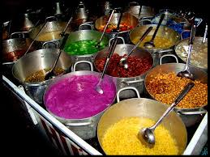

|  |
Ở Huế, chè không chỉ đơn thuần là một món ăn, mà từ lâu, đã trở thành nét văn hóa, văn hóa ẩm thực mang sắc màu xứ Huế…Huế có rất nhiều loại chè khác nhau, loại nào cũng đầy ắp hương vị thơm ngon riêng và rất hấp dẫn. Nhiều đến nỗi người ta ví von nếu Hà Nội có 36 phố phường thì xứ Huế cũng có đến... 36 thứ chè. Địa chỉ một số quán:1.Chè Hẻm Địa Chỉ: Số 1 Kiệt 29 Hùng Vương, Thành Phố Huế Giờ Mở Quán: 8h00 – 21h00 \Giá: 7.000 – 11.000 VND 2.Chè Ông Lạc Địa Chỉ: Địa Chỉ: 36 Thanh Tịnh, Thành Phố Huế Giờ Mở Quán: 12h30 – 21h00 \ Giá: 5.000 – 11.000 VND 3.Chè Cung Đình Huế 21 Món Địa Chỉ: 30 Lê Lợi, Thành Phố Huế Giờ Mở Quán: 17h00 – 0h00 \Giá: 10.000 – 15.000 VND 4.Chè Thạch 15 Món Địa Chỉ: Trần Hưng Đạo ( Cổng Chợ Đông Ba ), Thành Phố Huế Giờ Mở Quán: 14h00 – 21h00 l\Giá: 5.000 – 15.000 VND 5.Chè Thái Lệ Địa Chỉ: 116 Lê Thành Tôn, Thành Phố Huế Giờ Mở Quán: 9h00 – 22h00 l Giá: 5.000 – 25.000 VND |